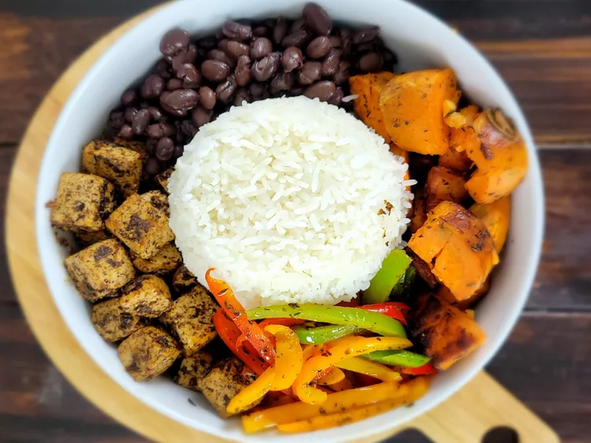

Lasagna

This meatless grain bowl is made with tofu "jerked" to perfection. The addition of roasted sweet potatoes brings
a surprise twist—all of which will have your tastebuds dancing for joy!
Ingredients
- 2 cups white rice
- 4 cups water
- 1 large sweet coconut oil or vegetable oil
- 1 large sweet potato, peeled and cubed
- 1/2 red bell pepper, sliced/li>
- 1/2 green bell pepper, sliced
- 1/2 orange bell pepper, sliced
- 1 (14 ounce) package extra firm tofu
- (15 ounce) can black beans, drained and rinsed
- 1 teaspoon jerk seasoning, or to taste
- 2 tablespoons jerk marinade
Steps
- Bring water and rice to a boil in a saucepan. Reduce heat to medium-low, cover, and simmer until rice is
tender and water has been absorbed, 20 to 25 minutes. Keep warm.
- Preheat the oven to 450 degrees F (230 degrees C).
- Toss cubed sweet potatoes in 1 tablespoon oil. Spread evenly on a baking sheet.
- Roast sweet potatoes in the preheated oven until tender but not too soft, 15 to 20 minutes.
- Heat a cast iron skillet with 1 tablespoon coconut oil over medium-high heat; add red, green, and orange
bell peppers and saute for 2 to 3 minutes. Remove from the skillet and set aside.
- Add remaining 1 tablespoon coconut oil to the same skillet. Add tofu evenly. Cook for 2 minutes and gently
flip to the other side. Continue cooking, turning occasionally, until tofu gets a little crisp on the edges,
6 to 8 minutes.
- Add jerk marinade, being deliberate about making sure tofu is covered. Once tofu starts to caramelize from
the marinade, remove from heat.
- Warm black beans in a microwave-safe dish until hot, 2 to 3 minutes, stirring every 30 seconds.
- Assemble grain bowls: divide rice, tofu, peppers, sweet potatoes, and black beans evenly into individual
serving bowls.